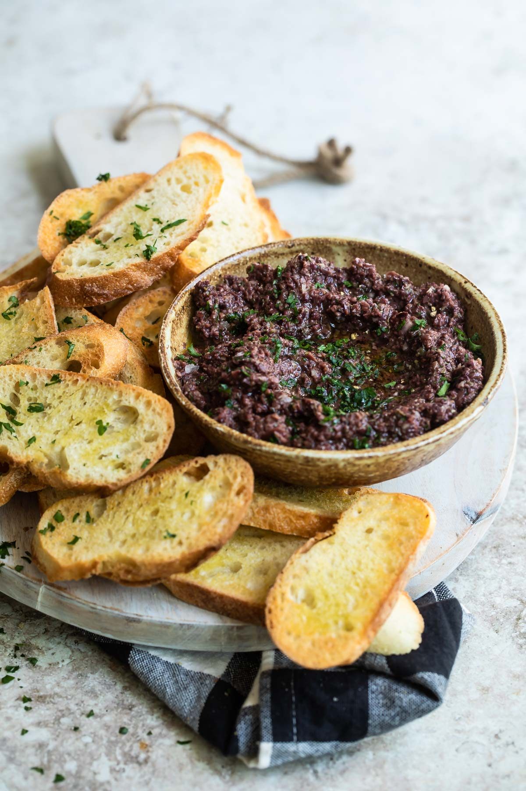

This is a really simple dish to prepare and it’s always a big hit at
parties.

Ingredients
1 8oz. jar sundried tomatoes
2 large garlic cloves
2/3 c. kalamata olive
1 t. capers
Instructions
Combine tomatoes and garlic in
Blend until as smooth
as possibe.
Add capers and olives.
Pulse the motor a few times until they are
incorporated, but still retain some
texture.
Make this the night before so that the flavors have time to blend. Just
bring it up to room temperature before you serve it. In the winter, try
serving it warm.